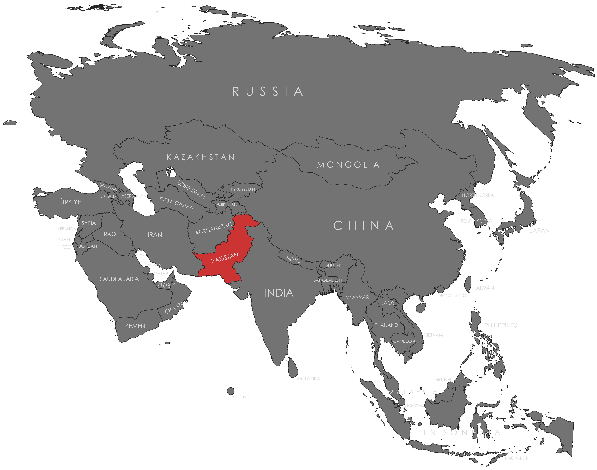

Specifications
- Local Name: پاکستان (Pākistān)
- Proportion: 2:3
- Name of the Flag: Flag of the Star and Crescent (Parcam-e-Sitāra-o-Hilāl; پرچمِ ستارہ و ہلال)
- Adopted: August 11, 1947
Symbolism
- Green: Islam and majority Muslim population
- White: Religious minorities and peace
- Crescent: Progress
- Five-pointed star: Light and knowledge
Colors:
Shapes / Symbols:
Meaning / Special Display
- The flag is prominently displayed on Independence Day (August 14) and at official government buildings, representing unity and Islamic identity.
- It is flown during national celebrations and international events to signify Pakistan’s sovereignty and values.
Description
- The flag embodies Pakistan’s Islamic heritage, cultural identity, and commitment to peace and progress.
- For citizens, it symbolizes national pride, unity, and respect for diversity within the country.

Return to Gallery